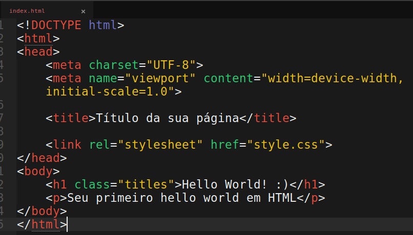

O HTML (HyperText Markup Language) é a linguagem de marcação usada para criar a estrutura e o conteúdo das páginas da web. Ele organiza o conteúdo de uma página através de uma série de tags que indicam diferentes elementos. Exmplo do Código HTML:
**EXEMPLO DO COMANDO HTML:**
CSS (Cascading Style Sheets) é uma linguagem de estilo usada para descrever a apresentação visual de um documento escrito em HTML ou XML. O CSS permite que você controle o layout, cores, fontes, espaçamento, e outros aspectos visuais de uma página web. **Os principais conceitos**: **ESTILIZAÇÃO VISUAL**= O CSS é utilizado para aplicar estilos aos elementos HTML, como a cor do texto, o tamanho das fontes, a cor de fundo, a disposição dos elementos na tela, entre outros. Ele separa o conteúdo (HTML) da apresentação (CSS), permitindo uma maior flexibilidade e facilidade de manutenção. No CSS, você seleciona elementos HTML específicos aos quais deseja aplicar estilos. **Os seletores podem ser**= **Por tag**: Aplica o estilo a todas as ocorrências de uma tag específica (ex: p para parágrafos). **Por classe**: Aplica o estilo a todos os elementos que possuem uma determinada classe (ex: .minhaClasse). **Por ID**: Aplica o estilo a um único elemento que possui um determinado ID (ex: #meuID). **PROPRIEDADES E VALORES**: No CSS, você define as propriedades (como color, font-size, margin) e seus respectivos valores (como red, 16px, 10px) para estilizar os elementos. **CASCATA E ESPECIFICIDADE**: O CSS utiliza um sistema de "cascata" onde os estilos são aplicados de cima para baixo, e a especificidade determina quais estilos são aplicados quando há conflitos. Por exemplo, um estilo inline terá prioridade sobre um estilo definido em uma folha de estilo externa. **RESPONSIVIDADE**: O CSS também é usado para criar layouts responsivos que se adaptam a diferentes tamanhos de tela, como em desktops, tablets, e smartphones. Isso é feito através de técnicas como media queries.
**EXEMPLO DO COMANDO CSS:**

**RESUMO:**
O HTML é a linguagem fundamental da web, responsável por organizar e estruturar o conteúdo das páginas, servindo como a espinha dorsal que permite a criação de sites funcionais e acessíveis.
O CSS é essencial para tornar as páginas web visualmente atraentes e funcionais, oferecendo controle sobre como o conteúdo HTML é exibido aos usuários.